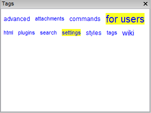

Interface - Tags cloud
This section controls allow colors of tags on the "Tags" pane to be changed.

The first two parameters allow you to change the behavior when you click the left and middle mouse buttons on the tag name in this panel. When you click on a tag name, you can search for pages marked with the corresponding tag, or add / remove tags for the currently selected page.
Also in this window you can configure the list of window titles that pops up when you click on a tag in the Tags panel: